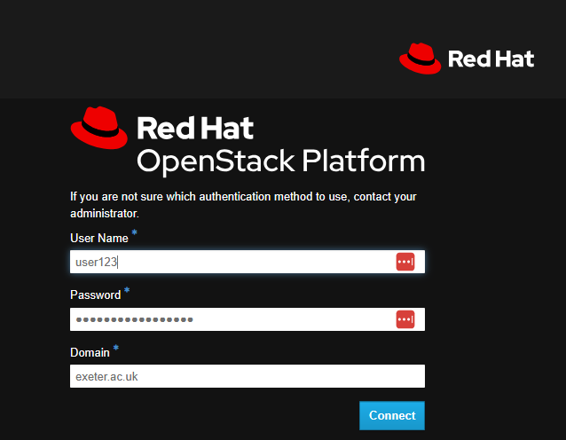
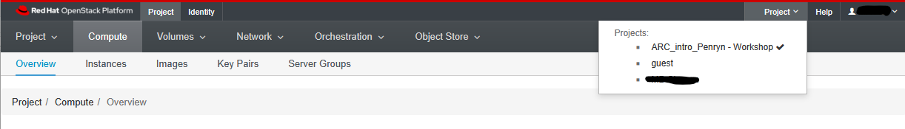
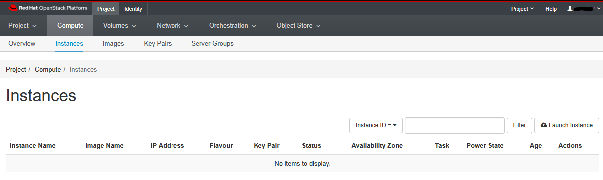
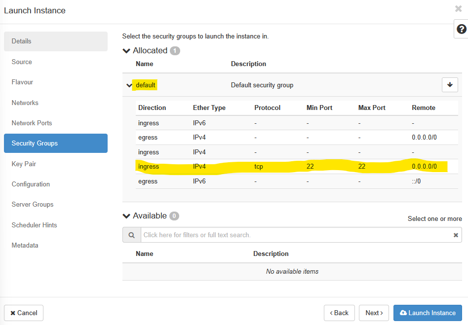
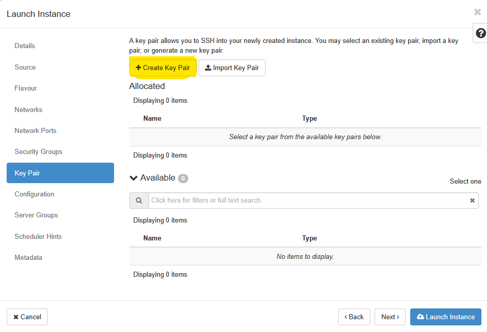
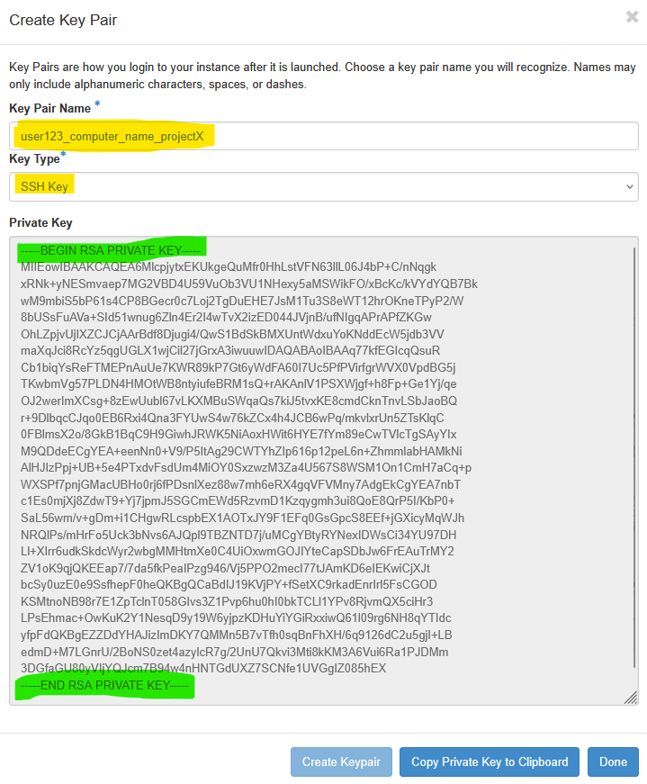
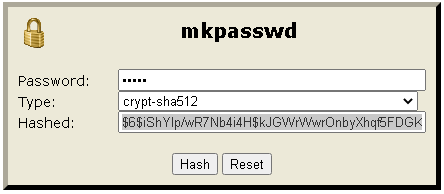
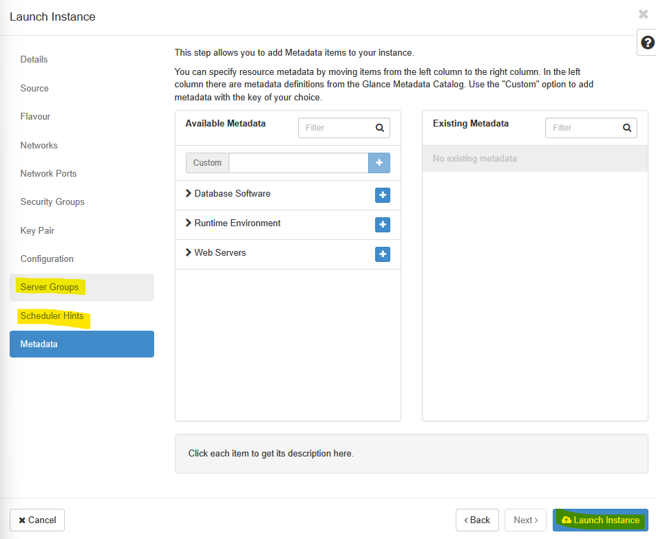

Logging Into the Console
In addition to being extremely comprehensive, the Exeter OpenStack cloud has a relatively easy (but detailed!) interface for interacting with its offerings. All you have to do is log in via a web-browser and most of the functionality of the is available for you and relatively easy to use.
To get started go to the following URL and login with your University of Exeter username (in the format of user123) the domain (exeter.ac.uk), and the password you use when logging onto your university resources.
We have set up a single workshop project which we will be using for training. Please do NOT abuse this project and do NOT put any personal, confidential or important data on the machines you will set-up during the training. You will all log in to the same management console and will be able to see machines which your friends and colleagues on the course will start.
https://stack.exeter.ac.uk/

This resource is only accessible within the University of Exeter network. So, if you are accessing this workshop from home or anywhere outside the campuses, you will need to connect to the University VPN service to be able to access the system.
Once logged in, you will see a web-page that looks similar to this:

As a first step - let’s associate ourselves with the correct project. This is specially important for all users who may have access to multiple “projects” associated with their research groups. In this instance, please click on the Project dropdown and select ARC_Intro_Penryn - Workshop as your project. If done correctly, you should see a tick mark next to the selected project, as illustrated below.

We can now take a look at the various tabs. These include:
This is the list of virtual machines that have been created.
The service OpenStack is known for. It enables you to create Linux and Windows Virtual machines. Best of all their computational and/or disk capacity can be increased or decreased at the click of a button! This section has most of the things we need for this course.
A storage unit. These can be created and attached to any compute which you have running. Ideal for moving large amounts of data between machines. Think of it as a removal hard drive which you can attach to any machine.
These are the templates from which you create instances.
This is another type of storage, but is relatively slow. It is ideal for archive or when storing large files (i.e. several Gb).However, it is currently disabled on the system. if you want to know more about it, please as your Research IT support team for assistance.
Click on “Compute” and then “Overview” at the top left.
On this page you’ll get a summary of the state for your account. You can see an example below. Note that we are using a shared project where you’ll also see everyone else’s instances. If you were using your own project (or your reserch group’s project), you would only see your instances (or that of your research group).

You see here that we have a certain allocation of resources (memory, disk space, CPUs). We can choose how to allocate these to accomplish our scientific goals. For instance, we may need one very large machine with lots of resource to do a single task (e.g. a genome assembly). Or we may want lots of smaller machines, each doing a small task (e.g. a webserver and a database server). We may want half the machines running Unix and the other half running Windows. The point is, we are in control of the compute and can choose what suits us best and it can all be done, by us at the touch of a button.
In the example above, we have been allocated up-to 32 instances and a total of 32 cores with roughly 60GB of RAM so that each of the workshop attendees can spin up a virtual machine with 1vCPU and 1GB of RAM.
Click on “Compute” and then “Instances” at the top left. When this tutorial was created, there were no existing instances within the workshop project, so, those of you following this tutorial within the second workshop, will see a page with No items to display and anyone who sign in after a few instances have been created, would see a list of instances that pre-exist at that time.

Ok, so how do we actually do all this? Well, from this page we can create our own servers on Exeter’s OpenStack using an image of a machine the Research IT team have created earlier for you. Servers which are created in this manner are called ‘Instances’. We can create as many servers as we like, start them, log-in to them, do some work, transfer data to/from them or destroy them altogether. We let the Research IT team worry about the hardware, power, cooling and maintenance - all we need to do is specify how powerful a computer we want (tiny, small, medium, large or extra-large).
The reason we are using the OpenStack here is that many of you have to analyse large datasets. But you only need to cruch those datasets occasionally. In the case of high-throughput sequencing data (e.g. Illumina or Oxford Nanopore) you will find that your desktop PC may not be powerful enough to cope with the data. Also installing and configuring many pieces of software (often written by other scientists), is frequently painful as they often require other programs (also often written by other scientists) to be installed as well. Factor in some obscure incompatibility and you can quickly end up in a situation where two programs that you need refuse to co-exist. With OpenStack, you can just start a server instance based on an image created by someone else who has already done all the hard work of installation and configuration. You may also want to use an existing docker- or singularity- container within such an instance to carry out your workflow.
So let’s get on and launch our first instance!
Create your Instance
In this section of the workshop we will create our Instance in Exeter’s OpenStack system.
If you have an instance from a previous session do not create another one. Please go to the Managing OpenStack page and restart your existing instance.
Otherwise let’s get on and launch the instance we need for our workshop !
Click on the “Launch Instance” button.

Give your instance your name (e.g. “Jane Doe’s Instance”)
 Remember that everyone is sharing the same project- so you will need to be identify your instance from everyone elses. The example above (“my_first_VM”) may be suitable for your own project, but it is not appropriate in a shared project.
Remember that everyone is sharing the same project- so you will need to be identify your instance from everyone elses. The example above (“my_first_VM”) may be suitable for your own project, but it is not appropriate in a shared project.
Click ‘Next’ and proceed to choose the image of the machine you want to replicate. In this example, we will be using the Ubuntu 22.04 (Desktop) image. Click on the highlighted arrow across from the “Ubuntu 22.04 (Desktop)” name and input a Volume Size of 20GB. Make sure to toggle the Delete Volume on Instance Delete option in this case.
When you are making your own VMs, within your own research project, you may chose to use different options based on your needs. Here, we have limited resources available for the workshop, so we need to make sure that everyone follows the instructions.

Click Next and select the desired flavour for this instance. Here, we would like you to select the ARC_Intro_Penryn - small flavour that will allow you to launch an instance with 1vCPU and 1GB of RAM. When you register your own project for access to OpenStack, you will see additional options for these flavours.

Security Groups
Click ‘Next’ to move on through Networks and Network Ports section and arrive at the Security Groups section. Here, click on the default security group to expand it, and to have a look at what has already been allowed in the firewall.

Here, we can see that SSH (port 22) has been allowed over the tcp protocol from anywhere (0.0.0.0/0). That is all we need to begin with, so we can go ahead and click Next.
If you are planning on using additional software that may need some ports to be opended up, then you can create your own security group with relevant ports allowed. For e.g. if you want to use VNC type software for remote desktop access to your instance, you will need to allow port 5901 etc. over tcp.
Key Pairs and Cloud Config
Setting up virtual machine (VM) instances in a cloud environment like OpenStack requires robust security measures and efficient configuration methods. This section details the critical steps involved in establishing secure access using SSH keypairs and automating initial VM setup with cloud-init, providing a foundational understanding for workshop participants.
Click ‘Next’ to move into the Key Pair section ::: callout-tip ## Key Pair OpenStack leverages SSH keypairs to secure VM instances at their launch time. When an instance is provisioned, OpenStack injects the user’s public key into the appropriate authorized_keys file on the new VM, making it ready for secure SSH access using the corresponding private key held by the user.
The private key, which is the secret component, must remain securely on the user’s local workstation and should never be uploaded to the cloud provider. This distinction is crucial for maintaining the integrity of the security model.
A key pair allows you to SSH into your newly created instance. You may select an existing key pair, import a key pair, or generate a new key pair. Click on the Create Key Pair button highlighted above and then enter a Key Pair Name and Key Type in the pop-up box that appears next. Key Pairs are how you login to your instance after it is launched.

Choose a key pair name you will recognize. Names may only include alphanumeric characters, spaces, or dashes. Once the Key Pair is generated, you will need to copy the Private Key to your clipborad and save it in a safe space. Do not forget where you keep this key - you will not be able to login to the instance without this key pair if you have not enabled any other login mechanism.

Once copied, click Done. Open a text editor like Notepad++, Context or similar and save this SSH Key. The image below shows the successfully created Key Pair.

The choice of authentication method for remote access significantly impacts the security and operational efficiency of cloud environments. While password-based authentication is familiar, SSH keypair authentication offers substantial advantages, making it the preferred standard in cloud platforms like OpenStack.
Password authentication relies on a user remembering a secret string (the password) and providing it to the server for verification.
SSH keypair authentication provides a superior level of cryptographic strength that even extremely long, complex passwords cannot match. The public keys, generated using sophisticated mathematical algorithms, are virtually impossible to guess or brute-force, offering a robust defense against common attack vectors - as long as un-authorized users do not gain access to your private key.
Click Next to move on to the Configuration section.
Beyond establishing secure access, automating the initial configuration of virtual machines is crucial for efficiency, consistency, and scalability in cloud environments. Cloud-init serves as the industry-standard tool for this purpose.
When a new cloud instance is deployed, cloud-init takes initial configuration data, often referred to as “user-data” or “vendor-data,” and automatically applies these settings during the instance’s first boot process. This functions much like a dynamic to-do list that cloud-init executes, configuring the VM according to predefined instructions. The significant advantage of cloud-init lies in its ability to reuse these configuration instructions across numerous deployments, consistently producing reliable results.
Cloud-init is capable of handling a wide array of initial configuration tasks. These include essential activities such as setting the hostname, configuring network interfaces, creating and managing user accounts, installing necessary software packages, and executing custom scripts. This comprehensive automation streamlines the deployment process, ensuring that all cloud instances are configured uniformly, thereby minimizing the potential for human error.
Below is a minimal cloud-init script to configure essentials such as adding a local user account with ability to install research related applications (e.g. sudo apt install package-name). This will be all you really need for most use cases, but for additional configuration options, please refer to the cloud-init documentation. Amend the settings as required to look as below (changing the ‘user123’, ‘User OneTwoThree’ and hashed_passwd lines):
#cloud-config
users:
- default
- name: user123
gecos: User OneTwoThree
sudo: ALL=(ALL) NOPASSWD:ALL
shell: /bin/bash
lock_passwd: false
ssh-import-id: ab123
hashed_passwd: “$6$rTACxh6DNbF/$p ... <snip> ... xwWllho2N7nKq1nn1”
# You have to keep the $6$ in front of the hashed password
# Update system package database
package_update: true
# Upgrade all packages to the latest versions
package_upgrade: true
# Install specified basic tools using the package manager
packages:
- openssh-server
- ntop
- nload
- htop
- vim
- multitail
- tmux
# Install Mamba using the Miniforge distribution
runcmd:
- echo "Starting Miniforge installation..."
- wget -O /tmp/Miniforge3.sh "https://github.com/conda-forge/miniforge/releases/latest/download/Miniforge3-$(uname)-$(uname -m).sh"
- chmod +x /tmp/Miniforge3.sh
- /tmp/Miniforge3.sh -b -p /opt/miniforge3
- echo "Miniforge installation complete. Initializing conda for all users..."
- /opt/miniforge3/bin/conda init bash --system
- echo "Conda initialization for all users complete. Users may need to log out and back in."Copy paste the above script into a text editor like Notepad++, Context, Subline etc. and edit the requisite sections such as name, gecos, hashed_password etc. as needed.
Note: The ‘hashed_passwd’ string is a crypt-sha512 hash (i.e., an encrypted version) of the password you will use to log in with (we advise not using your university password). Hashed passwords can be generated using a web page such as https://www.mkpasswd.net. You need to replace all of the ‘hashed_passwd’ field inside the double quotes with the hashed password you have generated.

Once you have your template ready, paste it into the Customisation Script section:

Click Next and skip over the Server Groups, Scheduler Hints and Metadata sections.

You have just configured an instance! Well done!
In summary, you have given your instance a name, chosen which source machine image to base the instance on, selected the size of the instance (i.e. amount of memory, disk space and processor power), configured the basic apps you wanted to pre-install on it and also configured how you can access it (key-pair vs username+password).
We’re ready to launch it! Click ‘Launch Instance’. At this point you wait for the instance to come online. This may take a few seconds for a small instance or about 10 minutes for an xx-large one.
Below you can see an example of an instance starting up (or spawning). It is running in the University data centre. Note that we don’t need to worry or think about the underlying hardware the system is running on. That’s all taken care of for us by OpenStack and the Research IT team.

Once it turns white and the ‘Status’ changes to ‘Active’, you should copy the IP address to the clipboard.

Note: above is an example where the IP address is 10.121.4.232 (yours will be different). We will need it in a moment to connect via X2Go remote desktop. Make sure you copy the whole address and nothing but the address.
Congratulations you have ‘configured’ and ‘turned on’ a new computer to use for the rest of this workshop.